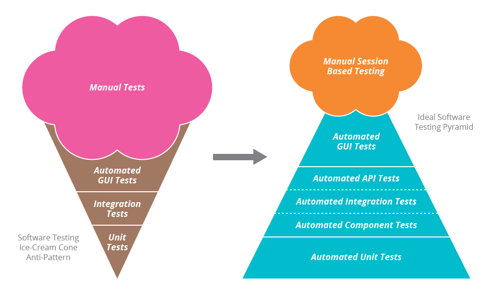

<!doctype html>
<html lang="en">

	<head>
		<meta charset="utf-8">

		<title>@TW_Academy: Unit Test & Refactoring</title>

		<meta name="description" content="@TW_Academy: Unit Test & Refactoring">
		<meta name="author" content="leeluolee">

		<meta name="apple-mobile-web-app-capable" content="yes" />
		<meta name="apple-mobile-web-app-status-bar-style" content="black-translucent" />

		<meta name="viewport" content="width=device-width, initial-scale=1.0, maximum-scale=1.0, user-scalable=no, minimal-ui">

		<link rel="stylesheet" href="css/reveal.css">
		<link rel="stylesheet" href="css/theme/serif.css" id="theme">
		<link rel="stylesheet" href="css/bootstrap.css">

		<!-- Code syntax highlighting -->
		<link rel="stylesheet" href="lib/css/solarized_light.css">
		<link rel="stylesheet" href="fontello/css/fontello.css">
		<link rel="stylesheet" href="css/index.css">
		<!-- Printing and PDF exports -->
		<script>
			var link = document.createElement( 'link' );
			link.rel = 'stylesheet';
			link.type = 'text/css';
			link.href = window.location.search.match( /print-pdf/gi ) ? 'css/print/pdf.css' : 'css/print/paper.css';
			document.getElementsByTagName( 'head' )[0].appendChild( link );
		</script>

		<!--[if lt IE 9]>
		<script src="lib/js/html5shiv.js"></script>
		<![endif]-->
	</head>
<body><div class="reveal"><div class="slides">


<section data-markdown>
	<script type="text/template">
	## @TW_Academy
  ## Unit Test & Refactoring
  ### Why, What, How <!-- .element: class="fragment danger" data-fragment-index="2" -->
	</script>
</section>


<section data-markdown style='text-align:left'>
	<script type="text/template">

## Hey, I'm JimmyLv.

-----

<span class='icon-github'></span> [@JimmyLv](http://github.com/JimmyLv)

<span class='icon-emo-happy'></span> [@吕立青](http://weibo.com/JimmyLv)

<span class='icon-location'></span> 成都 - 三靠谱


	</script>
</section>

<section data-markdown>
  <script type="text/template">

## <i class='icon-docs'></i>Agenda

1. Unit Test
2. Refactoring
3. (U)TDD

  </script>
</section>

<section data-markdown>
  <script type="text/template">

## <span class="icon-check"></span>怎样的程序才算正确？

  - 能运行？ -> <span class='fragment danger'>人肉测它个一小时？</span>
  - 能实现功能？ -> <span class='fragment danger'>负负得正呢？</span>
  - <span class='fragment danger'>把 Bug 当 Feature？</span>

  </script>
</section>

<section data-markdown>
  <script type="text/template">
  ## <span class='icon-bell'></span>Feedback

  ### <span class='fragment danger'>人与机器之间的互动</span>

  <span class='fragment'>反馈</span>
  <span class='fragment'>, 即时</span>
  <span class='fragment'>, 调整</span>
  <span class='fragment'>, 完善</span>
  <span class='fragment danger'>, 自信心</span>
  <span class='fragment'>...etc</span>
  </script>
</section>

<section data-markdown>
  <script type="text/template">
  ## <span class="icon-feather"></span>单元测试

  - 用代码来检查<span class='fragment danger'>代码</span>
  - 测试给予反馈 => <span class='fragment danger'>即时的自信心</span>
  - 单元测试和开发者的<span class='fragment danger'>距离最近</span>
  - 不断地利用反馈进行<span class='fragment danger'>调整和完善</span>
  </script>
</section>

<section data-markdown>
  <script type="text/template">

## <span class='icon-wrench'></span>讨论代码的易测性？

  - <span class='fragment'>作为使用者，从调用的角度？</span>
  - <span class='fragment'>面向接口编程？</span>
  - <span class='fragment'>测试即文档，如何学习第三方工具库？</span>

  </script>
</section>


<section data-markdown><script type="text/template">



## 测试金字塔

<i class='icon-quote-left'></i>单元测试 & 集成测试 & 功能测试<i class='icon-quote-right'></i>

</script></section>

<section data-markdown><script type="text/template">

<h2 class='f-tnr  icon-magic '>Feature Team</h2>

- 所有人都对质量负责任
- ThoughtWorkers 都是全栈<!-- .element: class="fragment grow highlight-red"  -->
- 其他公司的测试加班时特别惨…

</script></section>


<section data-markdown><script type="text/template">

## Why, What, then… <strong class='fragment danger'>How？</strong>

</script></section>

<section data-markdown><script type="text/template">

<h2 class='icon-emo-sunglasses danger'>三部曲</h2>

1. given

2. when

3. then

</script></section>

<section data-markdown><script type="text/template">

<h2 class='icon-calendar-empty'>Design Patterns</h2>


<i class='icon-quote-left'></i>
在设计前期使用设计模式常常导致过度工程，而设计模式为重构提供了目标，一次一小步修改代码，减少风险。<i class='icon-quote-right'></i>
</script></section>


<section data-markdown><script type="text/template">

<h2 class='icon-calendar danger'>Refactoring to Patterns</h2>

<span class="icon-check"></span>在不改变软件可观察行为的前提下改善其内部结构。

</script></section>

<section data-markdown><script type="text/template">

<h2 class='icon-codeopen'>无招胜有招</h2>

> 仅仅掌握思想是没用的，学会所有的“坏味道”和对应的重构手法，勤学苦练，然后你才可能有信心面对各种复杂情况。

<i class='icon-quote-left'></i>先学会所有的招式，然后忘记……<i class='icon-quote-right'></i>

</script></section>

<section data-markdown style="overflow: auto">
  <script type="text/template">

## <span class='icon-leaf danger'></span>代码坏味道

1. Duplicated Code（代码重复） 
2. Long method（方法过长） 
3. Large Class（类提供的功能太多） 
4. Long Parameter List（过长参数列）
5. Divergent Change （发散式变化）
6. Shotgun Surgery （霰弹式修改）
7. Feature Envy （夸夸其谈一般性）
8. Data Clumps （数据泥团）
9. Primitive Obsession（基本类型偏执） 
10. Switch Statement（分支语句） 
11. Parallel Inheritance Hierarchies （平行继承体系）
12. Lazy Class（冗赘类） 
13. Speculative Generality （夸夸其谈未来性）
14. Temporary Field （令人迷惑的暂时字段）
15. Message Chain （过度耦合的消息链）
16. Middle Man （中间人）
17. Inappropriate Intimacy （狎昵关系）
18. Alternative Classes with Different 
19. Incomplete Library Class （不完美的类库）
20. Data Class（纯粹的数据类） 
21. Refused Bequest （被遗弃的馈赠）
22. Comments（需要太多注释）

</script></section>

<section data-markdown data-background='#4BACC6' data-background-transition='concave'> <script>

### 当我们发现了 Bad Smells…

#<span class='icon-inbox'></span> Refactoring!<!-- .element: class="fragment"   -->
  </script>
</section>

<section data-markdown><script type="text/template">

<h2 class='icon-doc-text'>书籍</h2>

- 《重构：改善既有代码的设计》
- 《设计模式 : 可复用面向对象软件的基础》
- 《Refactoring to Patterns 重构与模式》
- 《Clean Code 代码整洁之道》

</script></section>

<section data-markdown data-background='#002b36' data-background-transition='zoom'>
	<script type='text/template'>

<h1 style='color:#fff'> <span class='icon-emo-happy'></span> Thank You</h1>


	</script>
</section>


<script src="lib/js/head.min.js"></script>
<script src="js/reveal.js"></script>

<script>

	// Full list of configuration options available at:
	// https://github.com/hakimel/reveal.js#configuration
	Reveal.initialize({
		controls: true,
		progress: true,
		history: true,
		center: true,

		transition: 'slide', // none/fade/slide/convex/concave/zoom
		fragments: true,


		// Optional reveal.js plugins
		dependencies: [
			{ src: 'lib/js/classList.js', condition: function() { return !document.body.classList; } },
			{ src: 'plugin/markdown/marked.js', condition: function() { return !!document.querySelector( '[data-markdown]' ); } },
			{ src: 'plugin/markdown/markdown.js', condition: function() { return !!document.querySelector( '[data-markdown]' ); } },
			{ src: 'plugin/highlight/highlight.js', async: true, condition: function() { 

				return true }, callback: function() { 
				hljs.initHighlightingOnLoad(); 
			} },
			{ src: 'plugin/zoom-js/zoom.js', async: true },
			{ src: 'plugin/notes/notes.js', async: true }
		]
	});

	Reveal.addEventListener( 'ready', function( event ) {
		console.log('hdahda')
		var root = document.querySelector('#shadowdom').createShadowRoot();
		console.log(root)
		root.innerHTML = '<style>h3{ color: red; }</style>' + 
		                 '<h3>h3 in shadowRoot</h3>';
	} );

</script>


</div></div>
</body>
</html>


